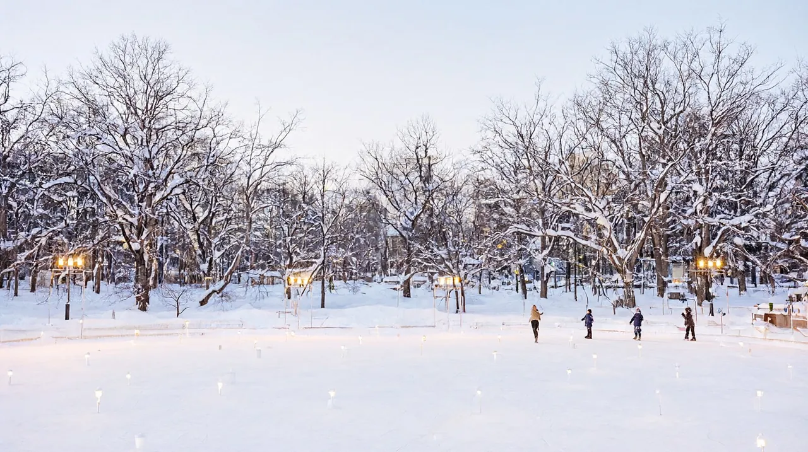

삿포로 여행 가이드
겨울 눈축제와 스프카레·미소라멘, 신치토세공항에서 시내까지 쾌속 37분

근거를 확인한 값만 적고, 확인하지 못한 항목은 "확인 필요"로 남겼습니다. 확인일은 2026-10-22입니다. 환율은 100엔=853.02원(한국수출입은행 매매기준율, 2026-10-16 고시)이고, 원화 금액은 모두 "약"입니다. 이 환율은 마쓰야마·나고야 허브와 같은 기준입니다.
홋카이도의 중심 도시입니다. 2월에는 오도리공원에서 눈축제가 열리고, 스프카레·미소라멘·성게·게 요리로 먹는 즐거움이 큽니다. 신치토세공항에서 시내까지 쾌속열차로 약 37분이라 이동 부담은 작지만, 겨울에는 추위와 눈길에 맞춘 준비가 꼭 필요합니다.
한눈에 보기
| 항목 | 내용 | 근거 |
|---|---|---|
| 추천 일수 | 3박 4일 (겨울에는 3박 4일~4박 5일) | 편집부 판단 |
| 비행시간 | 인천 출발 직항 약 2시간 30분~2시간 50분 (귀국편도 비슷) | 나우보딩 공공 항공 데이터 |
| 1인 총예산 | 약 40만~70만원 (항공 왕복 포함, 숙박·식비 제외) | ‘총예산 예시’ 항목 참고 |
| 아이 적합도 | 보통 (3단계 중 2단계). 눈축제와 눈썰매는 아이가 좋아하지만 2월의 영하 날씨와 눈길 이동이 부담 | 눈축제 공식, 기상 자료 |
- 눈축제 철이 아니면 추위 부담이 줄어 아이 적합도가 올라갑니다. 여름(6~8월)은 선선해서 걷기 좋은 계절입니다.
- 성인 2명과 초등학생 1명이 함께 가는 구성을 기준으로 읽으면 됩니다. 금액 표는 성인 1인 기준이므로 가족 합계는 ‘총예산 예시’ 항목에서 따로 계산해 두었습니다.
이 도시가 맞는 사람
| 구분 | 내용 |
|---|---|
| 맞는 유형 | 2월 눈축제 기간에 맞춰 떠나는 가족. 눈을 처음 만져 보는 아이와 함께 가는 가족 |
| 맞는 유형 | 스프카레, 미소라멘, 성게, 게 같은 먹거리가 여행의 중심인 가족 |
| 맞는 유형 | 여름 더위를 피해 선선한 도시를 찾는 가족. 공항에서 시내까지 짧은(쾌속 약 37분) 대도시 여행을 원하는 가족 |
| 맞는 유형 | 오타루·후라노·비에이 같은 근교를 하루 곁들이고 싶은 가족 |
| 덜 맞는 유형 | 영하 날씨를 견디기 어려운 유아 동반 여행. 눈길과 얼음길 걷기가 부담스러운 여행자 |
| 덜 맞는 유형 | 대형 테마파크가 목적인 여행 (도쿄·오사카 쪽이 유리) |
| 덜 맞는 유형 | 대중교통 없이 홋카이도 전역을 돌려는 여행 (렌터카가 필요할 수 있음) |
겨울 가족 여행이 현실적인지부터 짚어 보겠습니다. 2월 삿포로의 평균 기온은 낮 최고 약 0도, 최저 영하 6도 안팎입니다(기상청 평년값, 2026-10 확인). 쌓인 눈 때문에 길이 미끄럽고, 해가 오후 4시 50분 무렵 져서 저녁 일정이 짧아집니다. 아이에게 방수 겉옷과 미끄럼 방지 신발만 제대로 챙겨 주면 충분히 즐길 수 있습니다. 구체적인 준비물은 ‘아이 동반 코스’ 항목과 ‘현지 팁·주의’ 항목에 정리했습니다.
공항에서 시내까지
직항 노선 (인천~신치토세, ICN-CTS)
인천에서 삿포로의 관문인 신치토세공항까지는 직항이 매일 여러 편 있습니다. 2026-10-15부터 10-21까지 조회한 나우보딩 공공 항공 데이터에서는 하루 9편, 7개 항공사 모두 매일 운항으로 집계됐습니다. 아래 시각은 대표 편이고, 계절과 요일에 따라 달라지므로 예약할 때 항공사 공식 일정으로 다시 확인하세요.
| 항공사 | 인천 출발 시각 | 신치토세 도착 | 운항 요일 |
|---|---|---|---|
| 대한항공 | 10:35, 12:35 (2편) | 13:25, 15:20 | 매일 |
| 아시아나 | 10:15 | 13:00 | 매일 |
| 진에어 | 08:20 | 11:00 | 매일 |
| 제주항공 | 07:10, 12:15 (2편) | 10:00, 15:00 | 매일 |
| 이스타 | 09:20 | 11:50 | 매일 |
| 트리니티 | 10:10 | 13:00 | 매일 |
| 파라타 | 10:35 | 13:10 | 매일 |
(출처: 나우보딩 공공 항공 데이터. 신치토세공항의 공식 한국어 직항 안내 페이지는 2026-10-22에 열리지 않아, 편명과 시각은 예약 단계에서 항공사 공식 일정으로 재확인해야 합니다.)
- 가장 늦은 도착편은 제주항공의 15:00 도착입니다. 모든 직항이 낮 무렵까지 도착하기 때문에, 첫날 오후부터 오도리공원 일정을 넣을 수 있습니다.
- 부산이나 대구에서 출발하는 노선도 계절에 따라 있을 수 있으나, 이번 조사에서 확인하지 못했습니다. 예약할 때 직접 검색하세요.
공항에서 삿포로역까지: JR 쾌속에어포트가 기본
신치토세공항역은 터미널과 연결되어 있습니다. 국제선 터미널에서 무빙워크를 따라 국내선 터미널 지하 1층으로 가면 JR역이 나옵니다. 삿포로역까지는 JR 홋카이도의 쾌속에어포트가 가장 빠르고, 낮 시간에는 약 10분마다 다닙니다. 짐이 많거나 지하철 환승이 싫을 때는 리무진 버스가 대안입니다.
| 노선 | 소요시간 | 요금 (어른 편도) | 비고 | 추천 대상 |
|---|---|---|---|---|
| JR 쾌속에어포트 (특별쾌속·쾌속) | 약 33~37분 | 자유석 1,150엔 (약 9,800원), 지정석 1,990엔 (약 17,000원) | 삿포로역 직결. 유료 좌석 U시트는 현장 1,000엔, 인터넷 800엔 추가(도밍고, 비공식) | 삿포로역 숙소, 빠른 이동 |
| JR 구간쾌속 | 약 43분 | 자유석 1,150엔 (약 9,800원) | 역마다 정차 | 시간 여유가 있을 때 |
| 공항 리무진 버스 | 약 70분~1시간 30분 | 삿포로역 앞·스스키노 약 1,500엔 (약 12,800원, 도밍고 2026-04 기사, 비공식) | 호텔과 지하철역 근처에 정차. 도로 정체의 영향을 받음 | 짐이 많은 가족, 오도리·스스키노 숙소 |
(요금 출처: JR 요금은 네비타임·트립닷컴 조회값(2026-10), 버스 요금은 도밍고 2026-04-15 기사입니다. 쾌속에어포트의 공식 운임표와 첫차·막차 시각, 리무진의 공식 요금은 확인 필요입니다.)
- 첫차와 막차: 신치토세공항역 출발 첫차는 6시 38분, 막차는 22시 53분 무렵으로 알려져 있습니다(트립닷컴 조회, 비공식). 직항이 늦어도 오후 3시에 도착하므로 막차에 쫓길 일은 거의 없습니다.
- 유아 요금: 만 6세 미만은 어른 1명당 2명까지 무료입니다(일본 철도 일반 규정). 해당 구간 적용은 현지 역에서 확인하세요.
- 공항에서 곧바로 스스키노로 갈 때는 리무진이 편합니다. 시간이 우선이면 쾌속에어포트로 삿포로역까지 간 다음 지하철(도호선·난보쿠선)로 갈아타는 쪽이 빠릅니다.
- 도밍고가 쾌속 요금을 1,230엔으로 적은 기사가 있어 본문의 1,150엔과 차이가 납니다. 공식 운임표 확인 전까지는 확인 필요로 둡니다.
숙소 권역
날짜에 따라 가격 변동이 커서 1박 가격대는 숫자를 적지 않았습니다. 눈축제 기간(2027년 2월 4일~11일)에는 시내 호텔이 성수기 요금으로 오르고 일찍 마감됩니다. 일정이 정해지면 빨리 예약하는 편이 안전합니다.
| 권역 | 장점 | 단점 | 1박 가격대 | 적합 동행 |
|---|---|---|---|---|
| 삿포로역 | 쾌속에어포트 직결(약 37분). 지하철·JR 환승 거점이고 오타루·후라노·비에이 근교 출발역 | 번화가 스스키노와는 조금 떨어짐 | 확인 필요 | 공항 왕복과 근교 이동이 많은 가족 |
| 오도리공원 주변 | 오도리공원과 TV타워가 도보권. 눈축제 오도리 회장이 바로 앞 | 축제 기간의 혼잡과 소음 | 확인 필요 | 눈축제와 오도리 일정이 중심인 가족 |
| 스스키노 | 삿포로 최대 번화가. 맛집과 야식 선택지가 많고 눈축제 스스키노 회장(얼음 조각)이 열림 | 밤늦게까지 소란스럽고 공항에서 한 번 갈아타야 함 | 확인 필요 | 먹거리와 야경이 중심인 가족 |
| 나카지마공원 | 시내 남쪽의 조용한 구역. 공원과 온천 시설 가까이 | 시내 중심까지 지하철로 이동 | 확인 필요 | 조용히 쉬고 싶은 가족 |
- 도요코인 같은 비즈니스 호텔은 초등학생 이하 아이가 어른과 같은 침대를 쓰면 아이 숙박료가 없는 경우가 많습니다(도요코인 공식 캠페인, 마쓰야마 허브에서도 확인). 눈축제 기간에는 같은 호텔도 요금이 몇 배로 뛸 수 있으니, 예약 사이트에서 같은 날짜와 같은 인원 조건으로 비교하세요.
추천 일정
겨울에는 하루 방문지를 두 곳 이내로 잡는 것이 현실적입니다. 길이 미끄럽고 추워서 걸음이 느려지고, 해도 일찍 집니다. 삿포로 전용 일정 글은 아직 없어서 구성 제안으로 대신합니다.
| 일수 | 요약 |
|---|---|
| 2박 3일 | 1일차 낮에 도착해 오도리공원과 TV타워, 저녁은 스스키노. 2일차 아침 니조시장에서 성게·게, 이후 지하철이나 시영전차로 시내 구경, 오후는 실내(상점가 또는 홋카이도대학 캠퍼스 산책). 3일차 귀국. 눈축제 철이면 오도리 회장은 오전에, 점등(22:00까지)은 저녁에 |
| 3박 4일 (기본) | 1일차 도착 후 오도리공원과 TV타워. 2일차 눈축제 오도리 회장(또는 쓰도무 회장)과 스스키노. 3일차 오타루 당일치기, 또는 홋카이도대학 산책과 쇼핑. 4일차 귀국 |
| 4박 5일 | 3박 4일에 후라노·비에이 하루를 더함(눈축제 철에는 투어 이용). 눈축제가 없으면 아사히야마 동물원이나 온천 당일치기도 가능 |
- 눈축제(2027년 2월 4일~11일)에 맞춘다면 개막 직후보다 3일차 무렵이 덜 붐비는 편이라고 합니다(비공식 안내).
- 월요일에는 마루야마 동물원 같은 일부 시설이 쉴 수 있습니다. 시설별 휴원일은 확인 필요이므로 일정에 넣기 전에 확인하세요.
아이 동반 코스
| 시설 | 확인된 내용 | 예약 | 유모차·수유실·휴식 |
|---|---|---|---|
| 눈축제 쓰도무 회장 | 실내 시설에서 눈썰매와 눈놀이, 음식 부스를 운영. 10:00~16:00 (눈축제 공식) | 공식 안내에 일반 예약 제도 없음 | 실내라서 영하 날씨에도 아이가 오래 머물기 좋음. 지하철 도호선으로 이동 |
| 오도리 회장 (눈축제) | 대형 눈 조각과 국제 눈 조각 대회. 오도리 니시1~12초메, 22:00까지 점등 | 없음 | 야외라 한기가 셈. 30분~1시간마다 백화점과 지하상가로 들어가 몸을 녹이며 관람 |
| 홋카이도대학 캠퍼스 | 삿포로역 북쪽의 넓은 캠퍼스. 겨울에는 눈 덮인 가로수길. 부속 식물원은 삿포로역에서 도보 약 10분(도밍고 안내) | 식물원 입장료와 개장 여부는 확인 필요 | 눈길에서는 유모차가 어려움. 아이 신발은 미끄럼 방지 필수 |
| 마루야마 동물원 | 시내 서쪽에 있는 동물원. 공식 운영시간과 휴원일은 확인 필요 | 확인 필요 | 확인 필요 |
- 겨울옷: 겉옷은 방수·방풍 패딩, 안쪽은 얇은 옷을 여러 겹(내복, 기모, 패딩 순) 입힙니다.
- 장갑과 목도리: 목도리, 장갑, 귀 덮개는 필수입니다. 장갑은 얇은 안쪽과 방수 바깥쪽, 두 켤레가 실용적입니다.
- 신발: 미끄럼 방지 밑창이 있는 방수 부츠가 가장 중요합니다. 발목까지 오는 부츠와 두꺼운 양말을 권합니다.
- 휴식: 지하상가(오로라타운, 폴타운)와 백화점은 따뜻해서 아이가 추워할 때 쉬기 좋습니다. 30분~1시간마다 실내에서 몸을 녹이는 일정을 넣으세요.
맛집 시간대
삿포로를 대표하는 음식은 삿포로에서 시작된 스프카레, 된장 국물의 미소라멘, 성게와 게 요리입니다. 식당별 가격과 예약 규정은 확인하지 못해 "확인 필요"로 남깁니다.
| 시간대 | 방향 | 가격대 | 예약 |
|---|---|---|---|
| 아침 | 니조시장에서 성게·게·연어알 덮밥, 또는 호텔 조식 | 확인 필요 | 확인 필요 |
| 점심 | 스프카레 전문점이나 미소라멘 가게. 점심 세트는 저녁보다 저렴한 편 | 확인 필요 | 인기 스프카레 가게는 줄을 설 수 있음(확인 필요) |
| 저녁 | 스스키노의 게·성게 요리, 성게 덮밥, 스프카레, 라멘 | 확인 필요 | 인기 가게는 확인 필요. 아이 취침 시간을 생각해 일찍 가기 |
| 야식 | 스스키노의 미소라멘. 아이와 함께라면 편의점 간식 정도 | 해당 없음 | 해당 없음 |
- 성게와 게 요리는 가격 폭이 넓습니다. 시장에서 간단히 먹는 방식부터 전문점 코스까지 있으니 예산에 맞추어 고르세요. 카드 결제 가능 여부는 점포마다 달라서 확인이 필요합니다.
근교 당일치기
이번에는 근교를 자세히 조사하지 않고 이름과 접근 방향만 정리했습니다. 시간과 요금은 방문 전에 공식 안내로 확인하세요.
| 목적지 | 이동 (삿포로역 기준, 비공식) | 당일 가능 | 메모 |
|---|---|---|---|
| 오타루 | JR 쾌속(이시카리베이 라인) 약 32분 | 가능 | 운하와 상점가. 겨울에는 오타루 눈빛의 길 축제(2027년 2월 6일~13일, 비공식 일정). 시간과 요금은 JR 시간표로 확인 필요 |
| 후라노 | JR 특급 약 2시간 (비공식) | 가능 (이른 출발) | 겨울에는 후라노 눈축제(2월 중순), 여름에는 라벤더. 시간과 요금 확인 필요 |
| 비에이 | JR 특급 약 2시간 10분 (비공식) | 가능 (이른 출발) | 언덕 풍경과 청의호수로 알려진 곳. 겨울에는 눈 덮인 풍경으로 바뀜 |
- 시키사이노오카는 삿포로 시내가 아니라 비에이 근교의 꽃밭 언덕입니다. 시내 명소로 넣지 마세요. JR 비에이역에서 차로 약 12분입니다(비에이 관광협회 공식).
- 시키사이노오카 요금은 여름(7~8월)에 고등학생 이상 800엔, 초·중학생 500엔이고, 10월~6월은 무료입니다. 겨울에는 눈썰매와 스노래프트(1인 1,200엔) 같은 체험이 운영됩니다(비에이 관광협회, 시키사이노오카 공식). 삿포로에서 따로 가기보다 후라노·비에이 투어에 묶어 가는 방식이 일반적입니다.
- 겨울 근교는 눈길 운전이 부담이라 렌터카보다 JR과 투어 버스 조합을 권합니다.
총예산 예시
기준은 성인 1인, 3박 4일, 인천 출발입니다. 환율은 100엔=853.02원(한국수출입은행 매매기준율, 2026-10-16 고시)이며 원화는 모두 "약"입니다.
| 항목 | 금액(약) | 근거 |
|---|---|---|
| 항공 | 23만~55만원 | 인천 왕복 표시값(나우보딩). 직항이 하루 9편이고 저비용 항공사(제주항공·진에어·이스타)가 상대적으로 저렴. 날짜와 항공사에 따라 변동이 큼 |
| 숙박 | 확인 필요 | 삿포로역·스스키노 비즈니스 호텔 기준. 눈축제 기간은 크게 오름 |
| 식비 | 확인 필요 | 확인된 출처 없음 |
| 교통 | 약 33,000원 | 공항 왕복 쾌속에어포트 2,300엔(약 19,600원) + 지하철 1일권 2일분 1,660엔(830엔×2, 약 14,200원) |
| 입장료 | 확인 필요 | TV타워 전망대는 유료이나 정확한 금액은 확인하지 못함. 오도리공원과 눈축제 관람은 무료 |
| 합계 (숙박·식비 제외) | 약 40만~70만원 | 허브 앞머리 표기값. 아래 설명 참고 |
- 합계 설명: 위 표에서 확인된 항공과 교통만 더하면 약 26만~58만원입니다. 앞머리와 권역 페이지에 쓴 40만~70만원은 눈축제·연휴의 항공 상승분과 TV타워 입장료를 여유로 잡은 추정치로, 산식이 표에 모두 드러나지 않습니다. 정확한 산식은 확인 필요이고, 권역 페이지와 값을 맞추기 위해 표기값은 유지했습니다.
- 가족 3명(성인 2, 초등학생 1)으로 계산할 때는 항공과 숙박을 인원수대로 따로 구해야 하며, 초등학생 요금은 시설마다 기준이 달라 공식 안내를 확인하세요.
- 지하철 1일권은 830엔이고 휴일 전용 1일권은 520엔입니다(‘현지 팁·주의’ 항목).
예산 계산기로 계산 (예정)
현지 팁·주의
- 추위: 2월 평균 기온은 낮 최고 약 0도, 최저 영하 6도 안팎입니다(기상청 평년값, 2026-10 확인). 얇은 옷을 겹쳐 입고, 방수 패딩 겉옷과 미끄럼 방지 부츠를 기본으로 챙기세요.
- 빙판길: 눈길과 얼음길은 미끄럽습니다. 서두르지 말고 여유 있게 걷고 아이 손을 꼭 잡으세요. 큰길과 백화점 앞은 눈이 잘 치워져 있지만 골목은 얼어 있는 경우가 많습니다.
- 일몰: 해가 오후 4시 50분 무렵 져서 낮 일정은 일찍 시작하는 편이 좋습니다. 저녁은 지하상가, 백화점, 식당 같은 실내 중심으로 잡으세요.
- 교통권: 지하철 1일권(830엔)은 하루 4번 이상 탈 때 이득입니다. 주말과 공휴일에는 휴일 1일권(520엔)이 더 쌉니다. 시영전차는 1회 230엔, 1일권은 570엔 안팎(비공식)입니다.
- 눈축제 혼잡: 축제 기간(2027년 2월 4일~11일)에는 오도리 회장이 몹시 붐빕니다. 오전에 먼저 보고, 22:00까지 하는 점등은 저녁 산책 삼아 짧게 보는 편이 좋습니다.
귀국 동선
- 삿포로역에서 신치토세공항까지 쾌속에어포트로 약 37분입니다. 체크아웃 뒤 짐을 호텔이나 역에 맡기고 오전 일정을 잡을 때는, 출발 시각에서 체크인·보안 검색·출국 심사에 걸리는 시간과 열차 시간을 거꾸로 계산하세요. 직항 귀국편은 오전에서 오후에 몰려 있습니다.
- 국제선 체크인 마감과 공항 도착 권장 시각은 항공사마다 다릅니다. 큰 캐리어나 스키·보드 가방이 있으면 여유를 더 두세요.
- 면세: 2026년 11월 1일 구매분부터는 세금이 포함된 가격으로 사고, 출국할 때 세관 확인을 받은 뒤 환급받는 방식입니다. 한 점포에서 하루 5,000엔 이상(세금 별도)이 대상입니다(일본 세관). 신치토세공항에 환급 단말기가 있는지는 확인 필요이므로, 쇼핑이 많다면 일찍 도착하세요. 2026년 10월 31일까지 구매분은 계산대에서 세금을 뺀 기존 방식입니다.
- 면세 환급 절차 글
FAQ
- 인천에서 삿포로까지 직항이 있나요? 네. 대한항공, 아시아나, 진에어, 제주항공 등 7개 항공사가 매일 운항하며, 2026년 10월 조회 기준으로 하루 9편입니다(나우보딩 공공 항공 데이터). 비행시간은 약 2시간 30분~2시간 50분입니다.
- 공항에서 시내까지 얼마나 걸리나요? 쾌속에어포트로 삿포로역까지 약 33~37분, 자유석 1,150엔입니다. 리무진은 약 70분~1시간 30분이고 삿포로역 앞 약 1,500엔입니다(비공식).
- 아이와 겨울에 가도 괜찮을까요? 눈축제와 눈썰매는 아이가 좋아합니다. 다만 2월은 영하라서 방한 준비가 필수입니다. 방수 패딩, 미끄럼 방지 부츠, 장갑과 목도리를 챙기고 30분~1시간마다 실내에서 쉬세요.
- 눈축제는 언제 열리나요? 2027년 제77회는 2월 4일부터 11일까지 8일간입니다(눈축제 공식). 오도리, 스스키노, 쓰도무 세 곳에서 열리고 오도리는 22:00까지 점등합니다.
- 시내 교통은 어떻게 하나요? 지하철과 시영전차가 중심입니다. 지하철 1일권은 어른 830엔, 시영전차는 1회 230엔입니다(삿포로시 교통국 공식).
- 시키사이노오카는 시내에서 갈 수 있나요? 시키사이노오카는 삿포로 시내가 아니라 비에이 근교에 있습니다. 후라노·비에이 일정에 넣어서 가는 것이 일반적입니다.
- 근교는 어떻게 가나요? 오타루는 JR 쾌속으로 약 32분이라 가장 가깝고, 후라노와 비에이는 특급으로 2시간 안팎입니다(비공식). 겨울에는 눈길 운전보다 JR과 투어 버스가 편합니다.
관련 글
- 주부·시코쿠·기타 권역 가이드 (권역)
- 마쓰야마 여행 가이드 (같은 권역)
- 나고야 여행 가이드 (같은 권역)
- 2026년 11월 일본 면세 환급 절차 (‘귀국 동선’ 항목 연결)
- 데이터가 안 될 때 대처법
- 출국 전 체크리스트
- 항공권 총액 비교
다른 도시 비교
아래 값은 각 도시 허브 앞머리에서 가져왔습니다. 예산은 도시마다 산정 기준(숙박·식비 포함 여부, 일정 길이)이 달라 단순 비교가 어렵습니다. 기준은 각 허브의 ‘총예산 예시’ 항목에서 확인하세요.
| 도시 | 허브 | 비행시간 | 1인 총예산 | 추천 일수 |
|---|---|---|---|---|
| 마쓰야마 | 허브 보기 | 인천 직항 약 1시간 35분 | 1인 약 47만원 이상 (식비 제외 하한) | 3박 4일 |
| 나고야 | 허브 보기 | 인천 직항 약 1시간 50분~2시간 | 1인 약 25만~55만원 (숙박·식비 제외) | 2박 3일~3박 4일 |
| 다카마쓰 | 허브 보기 | 인천 직항 약 1시간 40분~1시간 45분 | 1인 약 25만~40만원 (항공 포함, 숙박·식비 제외) | 2박 3일~3박 4일 |
| 오키나와 | 허브 보기 | 인천 직항 약 2시간 20분~2시간 35분 | 1인 약 30만~60만원 (항공 포함, 숙박·식비 제외) | 3박 4일 |
| 도쿄 | 허브 보기 | 인천·김포 약 2시간 5분~2시간 40분 | 1인 약 60~115만원 | 3박 4일 (근교·디즈니면 4박 5일) |
| 후쿠오카 | 허브 보기 | 인천 직항 약 1시간 30분 | 1인 약 35~65만원 (2박 3일, 항공 포함) | 2박 3일~3박 4일 |
확인 필요로 남긴 항목
- 신치토세공항 공식 한국어 직항 안내가 열리지 않아, 공식 노선표와 편명·시각
- 쾌속에어포트 공식 운임표와 첫차·막차 시각 (본문 값은 네비타임·트립닷컴 조회, 도밍고는 1,230엔으로 표기해 차이가 있음)
- 공항 리무진 공식 요금과 배차 (삿포로역 앞 1,500엔은 도밍고 2026-04, 비공식)
- 숙박 1박 가격대(눈축제 기간 포함), 식당 가격과 예약 규정
- 삿포로 TV타워 전망대 입장료의 정확한 금액
- 홋카이도대학 부속 식물원의 입장료와 개장, 마루야마 동물원의 운영시간과 휴원일
- 오타루·후라노·비에이의 JR 소요시간과 요금(비공식 안내), 시키사이노오카 겨울 체험 요금 일부
- 신치토세공항의 면세 환급 단말기 유무
- 부산·대구 등 다른 한국 출발 노선
- 예산 합계 40만~70만원의 정확한 산식 (항공과 교통만 더하면 약 26만~58만원)
공식 출처
- 삿포로 관광 공식(눈축제, TV타워): https://www.sapporo.travel/ko/
- 삿포로 눈축제 공식: https://www.snowfes.com/
- 삿포로시 교통국 승차 요금·승차권: https://www.city.sapporo.jp/st/josyaken/ryokin/ryoukin.html , https://www.city.sapporo.jp/st/josyaken/card.html
- 홋카이도 공식 관광: https://www.visit-hokkaido.jp/kr/
- 비에이 관광협회(시키사이노오카): https://www.biei-hokkaido.jp/ko/
- 시키사이노오카 공식: https://shikisainooka.jp/kr
- 일본 세관(면세 환급): https://www.customs.go.jp/kaigairyoko/taxrefund_e.html
- 나우보딩(인천~삿포로 공공 항공 데이터): https://nowboarding.kr/route/icn-cts